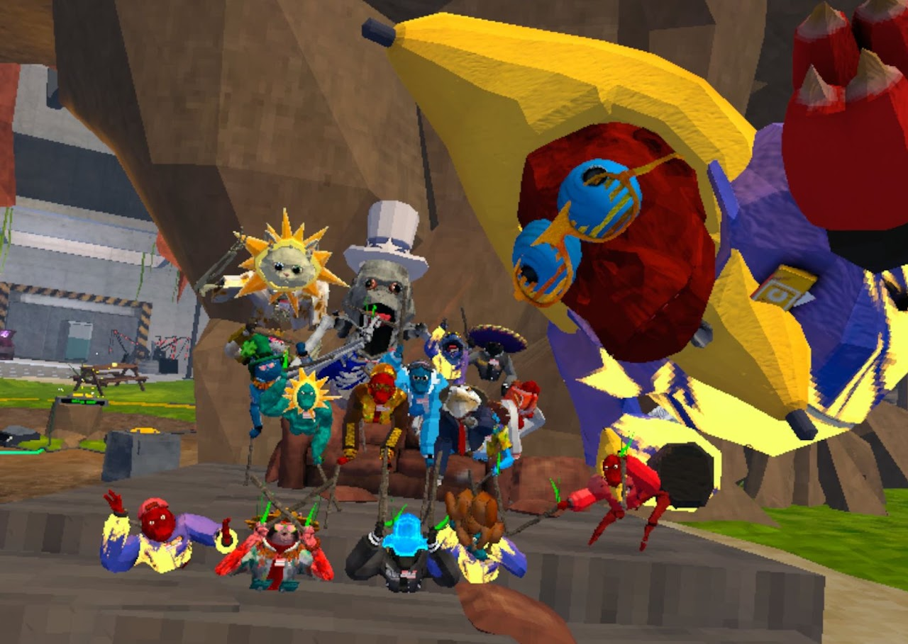
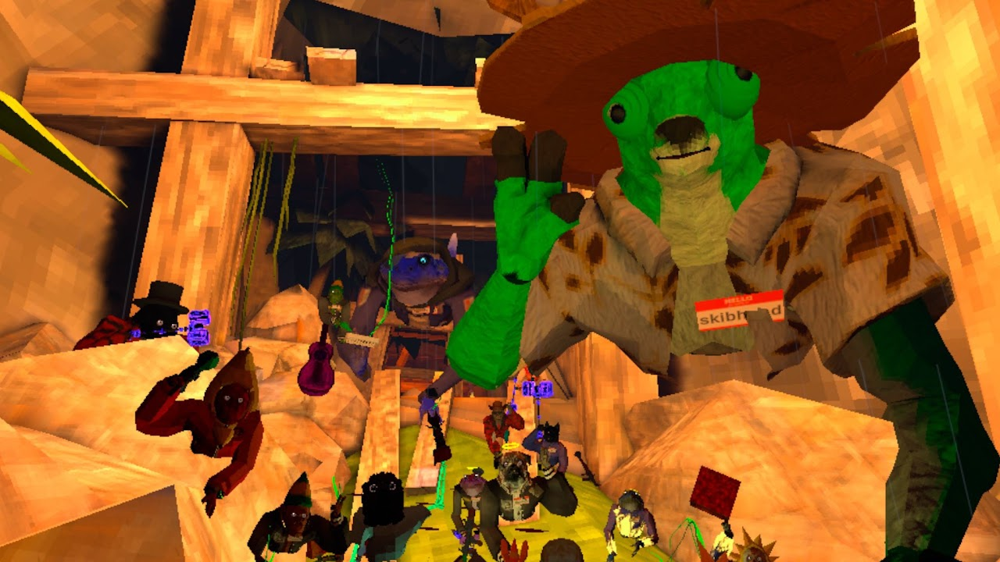

> open file: animal company
Animal Company
Large-scale community management for Animal Company VR (Wooster Games, contract, May to Jul 2025).
At Animal Company VR I worked with a community of over 300,000 active users. I hosted weekly events, games and adventures, and set up a live stream using the newly introduced mobile streaming camera.
300K+member Discord
15+volunteer moderators
400K+views on a top TikTok
200K+views on a top Short


What I did
- Managed the Discord and restructured its channels.
- Set up incentives for the volunteer moderation team.
- Live-streamed developer Q&As with OBS.
- Moderated the game's Reddit.
- Made short-form content for TikTok and YouTube Shorts, built to travel.
Video
Short-form edits
A few popular pieces made with virality in mind.